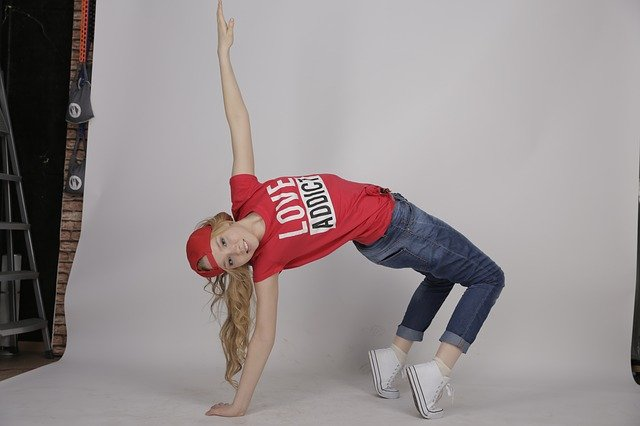

dancing
I like to play guitar in the evening when I feel like wanna sing a secondImg or when I feel bored with my studying.
Coding

Beside guitar coding is also my favorite hobby, coding make me feel useful and improve my knowledge, despite sometime I don't know how to do it but I decide to check from the internet and completed my toy.
Learning
My favorite thing is the new build, new discover,new techniques especially on the technology parts. I enjoy in trying something new, something I haven't known yet it's the most interesting for me.
play guitar
Dancing is my hobby every evening, I love Kpop dance and my favorite Idol is LISA. Dancing make me feel fresh after my complicated learnt at day.
Travel

I enjoy in traveling because I decide to found new thing to my life, I always interests in difference places, I wanna see what the differences from some places I have been.
Creation
Beside those which I had describe you, creation is a part of my favorite action. I try to practice it as possible I can in the present, and I'll improve in the future. Now, I just try to edit photo or video for a little bit, it's like just take some hobby.